rm(list = ls())
ifelse(!require(igraph), (install.packages("igraph", dep = T) & require(igraph)), require(igraph))[1] TRUEdatpath <- "C:/Users/th92suro/Nextcloud/Soziologie/SERIOUS/Lehre/SoSe24/Intro_to_SNA_TH/"rm(list = ls())
ifelse(!require(igraph), (install.packages("igraph", dep = T) & require(igraph)), require(igraph))[1] TRUEdatpath <- "C:/Users/th92suro/Nextcloud/Soziologie/SERIOUS/Lehre/SoSe24/Intro_to_SNA_TH/"The data we use stem from the Teenage Friends and Lifestyle Study (Bush, West & Michell 1997, Michell and West 1996, Pearson and Michell 2000, Pearson and West 2003). It was conducted from 1995 to 1997 in Glasgow and followed students in one school from their second to their fourth year of secondary school. A particular focus of the study was on attitudes towards smoking and smoking behaviour. We will use this data a lot throughout the next weeks.
There are three matrices, one for each measurement point (2nd, 3rd, 4th year of secondary school). Each matrix contains n = 160 rows and colums, one for each students participating in the study. The values signify a relationship between ego (row) and alter (column) as reported by ego. 0 means no tie, 1 stands for best friends, 2 for just friends and 10 for structural zero (i.e., at least one of the involved students was not yet part of the school cohort). In the following, we will create one friendship matrice per wave from this data containing all friends and best friends.
load(paste0(datpath, "data/Glasgow_data/Glasgow-data_prepared.RData"))
# load the data
load(file = paste0(datpath, "data/Glasgow_data/Glasgow-friendship.RData"))
# recode the structural zero's to NA
friendship.1[friendship.1 == 10] <- NA
friendship.2[friendship.2 == 10] <- NA
friendship.3[friendship.3 == 10] <- NA
# recode all friends to 1 (same as best friends) for the "just friends" matrices
friendmat_1 <- friendship.1
friendmat_1[friendmat_1 == 2] <- 1
friendmat_2 <- friendship.2
friendmat_2[friendmat_2 == 2] <- 1
friendmat_3 <- friendship.3
friendmat_3[friendmat_3 == 2] <- 1
# store the "just friends" matrices as a named list
friendmats <- list("wave_1" = friendmat_1,
"wave_2" = friendmat_2,
"wave_3" = friendmat_3)There is a subset containing just 50 female students from the data which is easier to visualize. We’ll create matrices and data frames containing only the reduced data in the following. Gender becomes an irrelevant category in the reduced data as there is no variance!
friends <- list("wave_1" = friendmats$wave_1[dat$idstud, dat$idstud], # only keep those rows and colums
"wave_2" = friendmats$wave_2[dat$idstud, dat$idstud], # for which there is an id in dat
"wave_3" = friendmats$wave_3[dat$idstud, dat$idstud])Now, to save our progress, we need to store the new data frame and the lists of matrices in a file, so we do not need to do the process of data cleaning every time we analyse the data.
save(dat,
friends,
file = paste0(datpath, "data/Glasgow_data/glasgow_data.RData"))To begin with, we will only use a very small network of 5 nodes. Later, we will also use the real friendship networks from Scotland.
set.seed(2243)
g <- graph.formula(1--2, 2--3, 3--5, 4--2, 1--3, 2--5)
plot(g)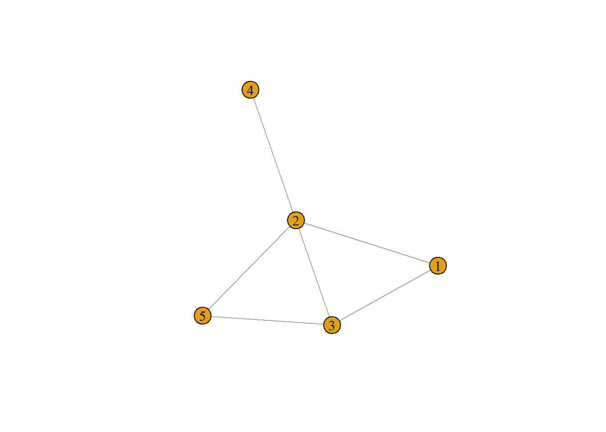
By default, igraph uses a random layout to plot the network. This is because there are no exact coordinates for network plotting. Hence the random seed for reproducibility.
set.seed(54564)
plot(g)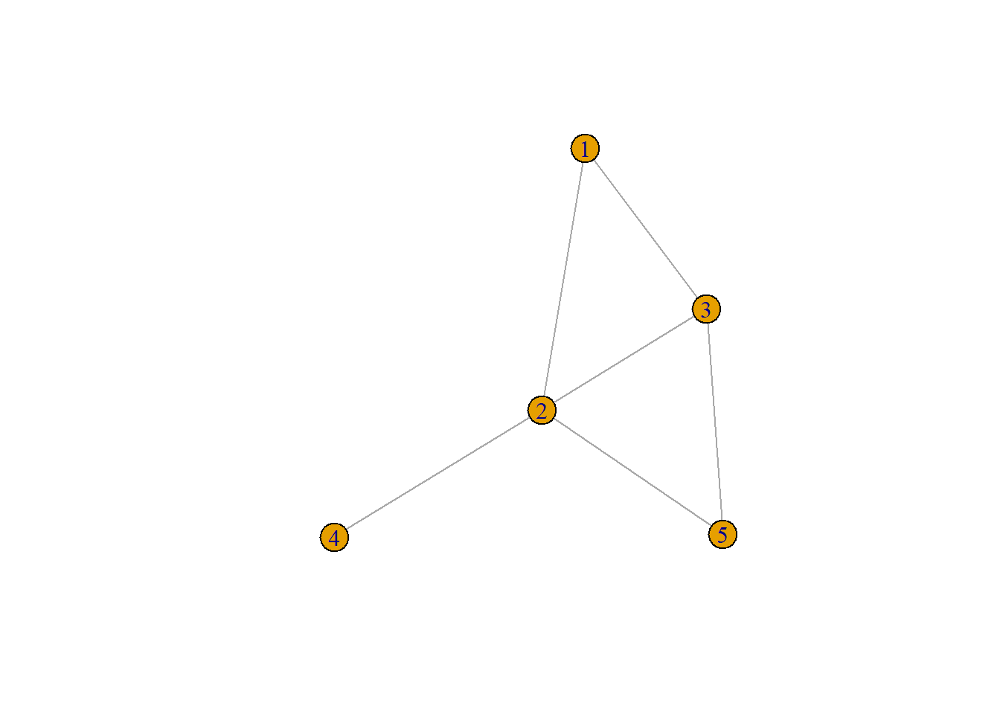
The plots differ somewhat even though it is the same layout!
Further default options of igraph are that it plots the vertex labels (in blue), colors the edges gray and the vertices orange, and plots the ties as arrows. In the following, we will learn how to adjust all that.
plot(g,
vertex.size = 30)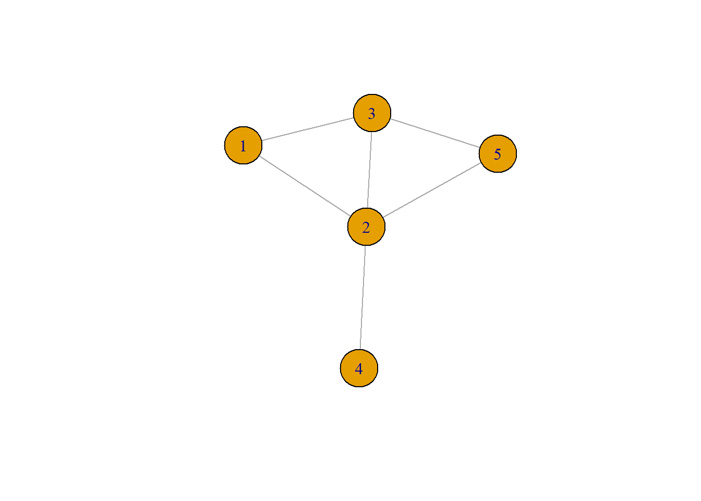
plot(g,
vertex.size = 2,
certex.label.cex = 2)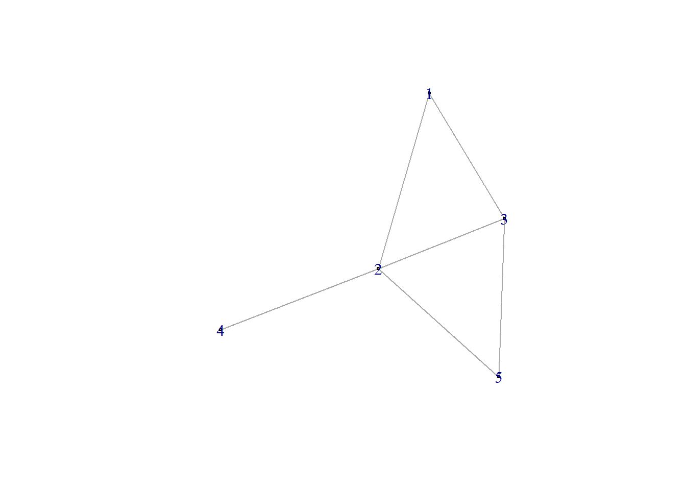
plot(g,
vertex.color = "grey",
vertex.size = 10,
edge.color = "darkgrey",
vertex.label.color = "black")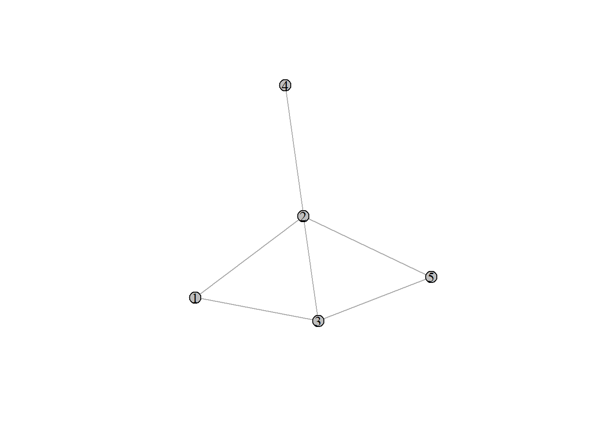
These parameters were now set globally for all participants. Alterntively, they can also be set as vertex- and edge-attributes.
V(g)$color <- "#8856a7"
V(g)$size <- 30
plot(g,
vertex.label = "",
edge.size = 1,
edge.width = 1,
edge.arrow.size = 0.5)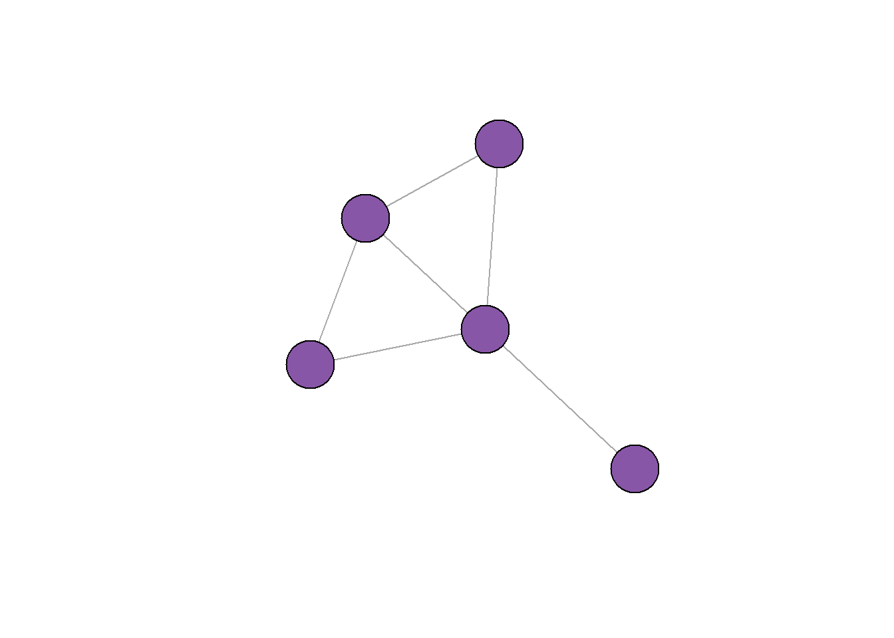
V(g)[c(1,2,5)]$color <- "#9ebcda"
plot(g,
vertex.label = "",
edge.width = 1,
edge.arrow.size = 0.5)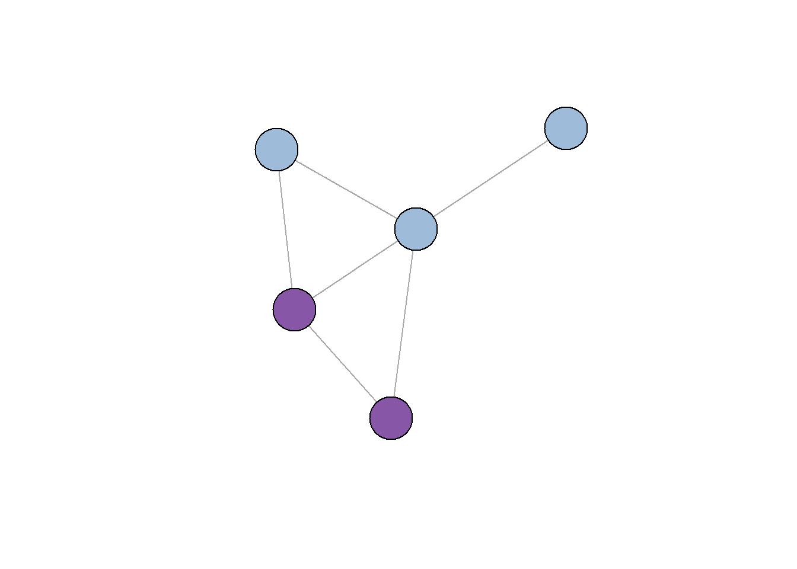
V(g)$label.cex <- c(2.5,1,1.5,3,2.5)
plot(g, vertex.label.color="black")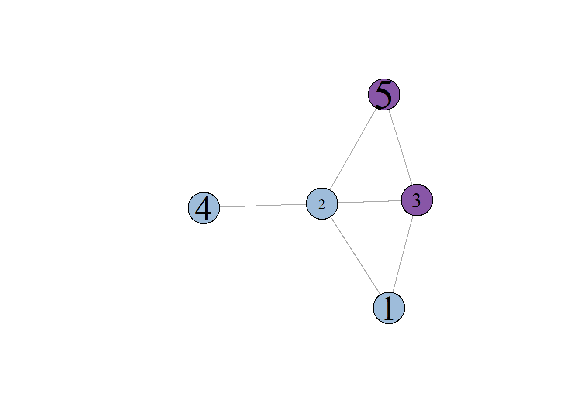
Similarly, we can also alter the attributes and the design of the edges:
plot(g,
vertex.label.color = "black",
edge.color = "black")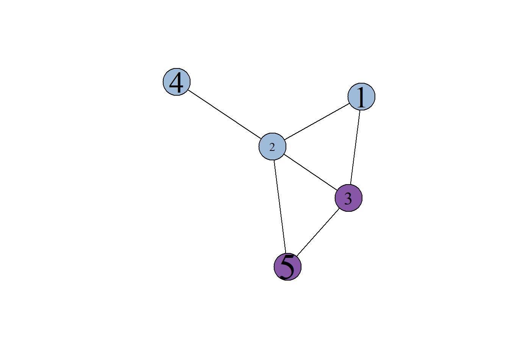
# set the edge attribute 'width' to a random number between 0 and 10
E(g)$width <- runif(ecount(g), 0, 10)
plot(g,
vertex.label.color = "black",
edge.color = "black")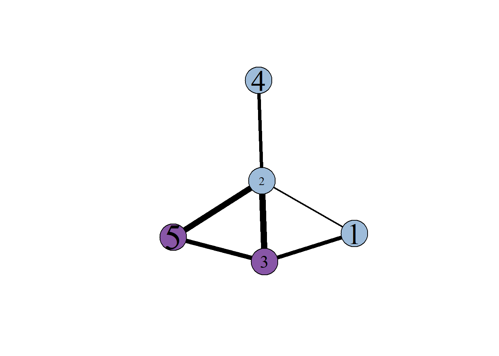
# set the rounded edge width as an edge label
E(g)$label <- round(E(g)$width)
plot(g,
vertex.label.color = "black",
edge.color = "grey",
edge.label.cex = 2,
edge.label.color = "black")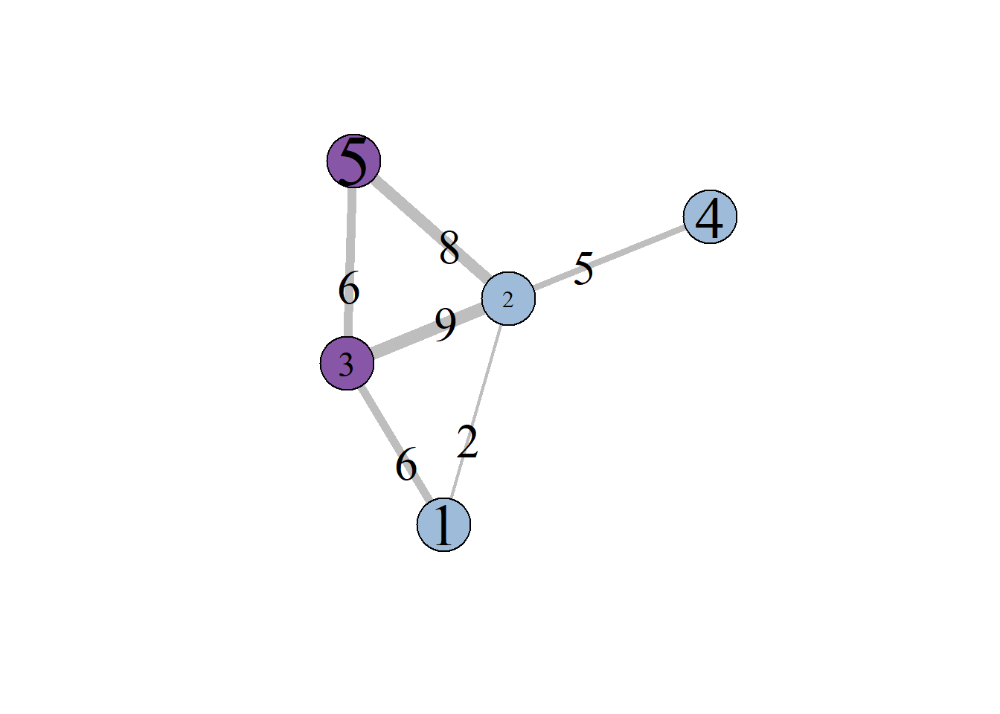
thePurple <- V(g)[ color == "#8856a7" ]
theBlue <- V(g)[ color == "#9ebcda" ]
E(g)[ thePurple %--% thePurple ]$color <- "#8856a7"
E(g)[ theBlue %--% theBlue ]$color <- "#9ebcda"
E(g)[ theBlue %--% thePurple ]$color <- "#636363"
plot(g,
vertex.label.color="black",
edge.label.cex=2,
edge.label.color="black")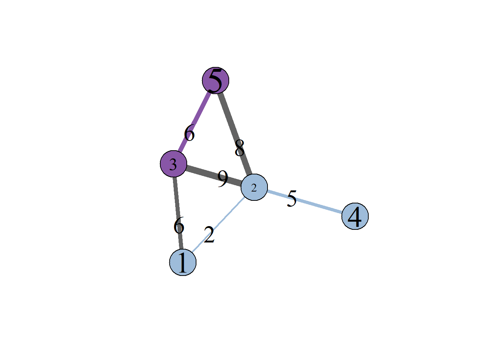
In the help pages of igraph, additional plotting parameters can be found:
help(igraph.plotting)starte den http Server für die Hilfe fertigNow, we want to plot a real world example: the data from Scotland we prepared earlier on:
graph1 <- graph_from_adjacency_matrix(adjmatrix = friends$wave_1,
mode = "directed")
graph2 <- graph_from_adjacency_matrix(adjmatrix = friends$wave_2,
mode = "directed")# plot wave-1 friendships using diffeent *layouts*
plot(graph1,
vertex.size = 6,
vertex.label = "",
edge.width = .001,
edge.arrow.size = 0.5,
vertex.color = "darkblue",
edge.color = "black",
layout = layout.random(graph1))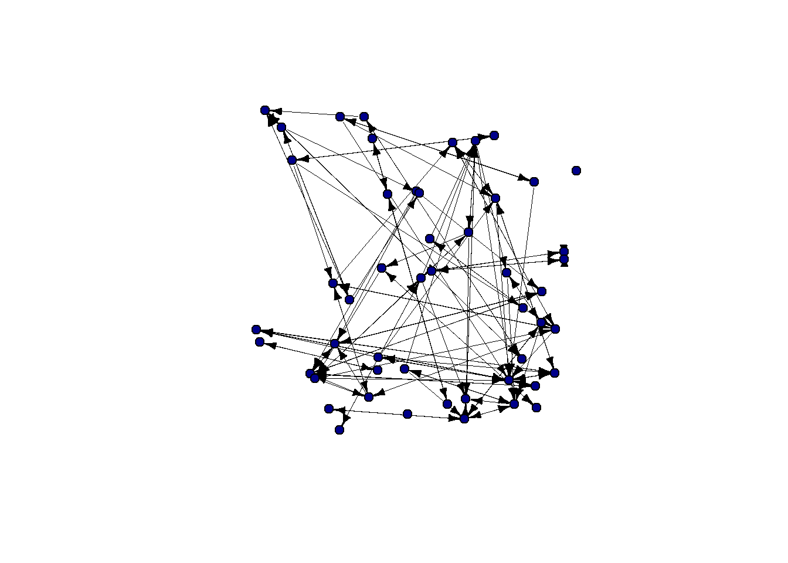
plot(graph1,
vertex.size = 6,
vertex.label = "",
edge.width = .001,
edge.arrow.size = 0.5,
vertex.color = "darkblue",
edge.color = "black",
layout = layout.circle(graph1))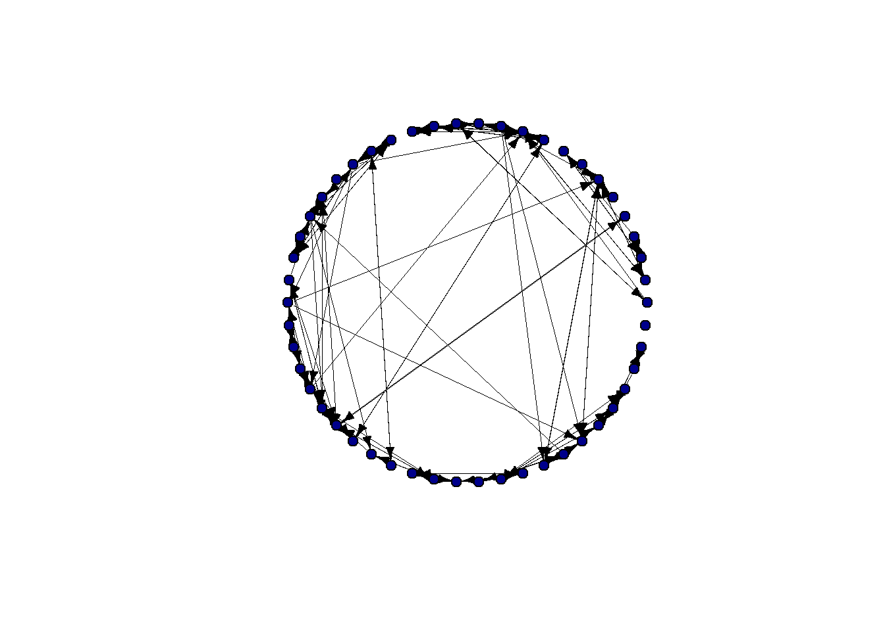
plot(graph1,
vertex.size = 6,
vertex.label = "",
edge.width = .001,
edge.arrow.size = 0.5,
vertex.color = "darkblue",
edge.color = "black",
layout = layout.fruchterman.reingold(graph1))
If you want to plot muliple networks side by side, you need to apply the par function first:
par(mfrow = c(1, 2))
plot(graph1,
vertex.size = 6,
vertex.label = "",
edge.width = .001,
edge.arrow.size = 0.5,
vertex.color = "darkblue",
edge.color = "black",
layout = layout.fruchterman.reingold(graph1))
plot(graph2,
vertex.size = 6,
vertex.label = "",
edge.width = .001,
edge.arrow.size = 0.5,
vertex.color = "darkblue",
edge.color = "black",
layout = layout.fruchterman.reingold(graph1))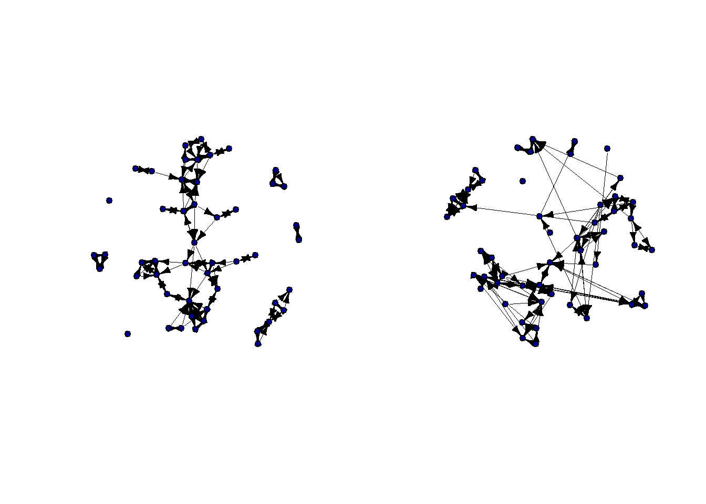
# end the side-by-side plotting
par(mfrow = c(1, 1))Finally, we can also add vertex attributes form a data frame and plot them.
V(graph1)$age <- dat$age
V(graph1)$gender <- dat$male
V(graph1)$money <- dat$money_1
V(graph1)$color <- ifelse(V(graph1)$gender == 0, "#a6bddb", "#1c9099")
V(graph1)$size <- V(graph1)$age
V(graph1)$shape <- ifelse(V(graph1)$money < 5, "circle", "rectangle")
plot(graph1,
vertex.label = "",
edge.width = 3,
edge.color = "black" )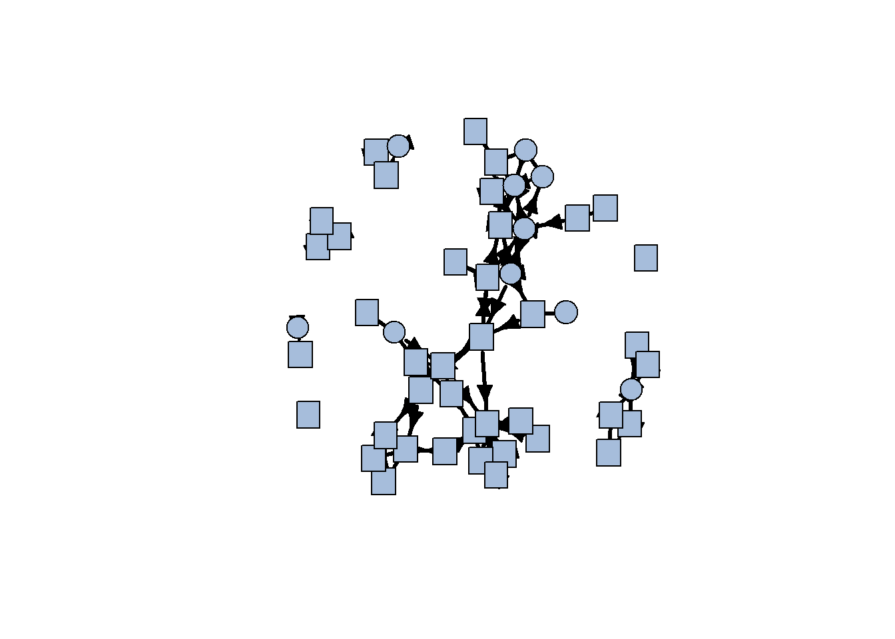
With the commands pdf(), png(), and jpg(), we can save plots as pdf, png, and jpg, respectively.
pdf(file = "wave_1_and_2.pdf") # specify the filename of the file to be saved. You can also specify the resolution, width, and height here
# the pdf()/png()/jpg() command opens up a virtual device in which you run your plotting code. all plots which are run in here are saved into the same file
par(mfrow = c(1, 2))
plot(graph1,
vertex.size = 6,
vertex.label = "",
edge.width = .001,
edge.arrow.size = 0.5,
vertex.color = "darkblue",
edge.color = "black",
layout = layout.fruchterman.reingold(graph1))
plot(graph2,
vertex.size = 6,
vertex.label = "",
edge.width = .001,
edge.arrow.size = 0.5,
vertex.color = "darkblue",
edge.color = "black",
layout = layout.fruchterman.reingold(graph1))
dev.off() # This is very important! This "closes" the pdf/png/jpg device again png
2 par(mfrow = c(1, 1))The Bali network contains the interactions within the terrorist group of the Jemaah Islamiyah terrorists who carried out a terror attack in Bali in 2002.
1.) Install the packages intergarph, RColorBrewer and UserNetR. Then run the command data(Bali). What happens? 2.) With the command Bali <- asIgraph(Bali), you can convert the network into an igraph object 3.) Plot the network. 4.) Change the Vertex size to 20. 5.) How many terrorists were in the network? How many interactions existed between them? 6.) Change the vertex label so that it expresses the vertex attribute “role” 7.) Change the vertex color so that it also expresses the vertex attribute “role”. TIP: aesthetically pleasing colors can be found in the R-Package RColorBrewer. the following commands may be helpful:
brewer.pal.info # shows all palettes and how many different colors they have display.brewer.pal(5, “BrBG”) # shows the 5-color version of the “BrBG” palette my_colors <- brewer.pal(5, “BrBG”) # saves the names of the colors in the 5-color version of the “BrBG” palette my_colors[factor(V(Bali)$role)] # creates a factor from the role attribute and assigns each factor level a different color from the color palette my_color
8.) Change the shape of the commanders (CT) to be a “rectangle”. All other vertices should be a “circle”. 9.) The edge attribute IC describes the intensity of interaction in a tie. Change the width of each edge so that it represents the intensity of interactions 10.) Rather than using vertex labels, you can also add a legend to the plot:
plot(Bali, vertex.label=NA) legend(“bottomleft”, legend=c(“BM”,“CT”,“OA”,“SB”,“TL”), col=my_colors, pch=19, pt.cex=2, title=“Terrorist Role”)
11.) Save the network with this legend into a pdf. 12.) Interpret the network plot: What does it tell about the structure of the terrorist cell? What could be possible reasons for such a structure?